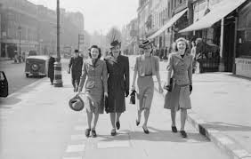

Antecedentes
Las causas bélicas del estallido de la Segunda Guerra Mundial son, en Occidente, la invasión de Polonia por las tropas alemanas y, en Oriente, la invasión japonesa de China, las colonias británicas y neerlandesas y posteriormente el ataque a Pearl Harbor. La Segunda Guerra Mundial estalló después de que estas acciones agresivas recibieran como respuesta una declaración de guerra, la resistencia armada o ambas, por parte de los países agredidos y aquellos con los que mantenían tratados. En un primer momento, los países aliados estaban formados tan solo por Polonia, Reino Unido y Francia, mientras que las fuerzas del Eje las constituían únicamente Alemania e Italia en una alianza llamada el Pacto de Acero. A medida que la guerra progresó, los países que iban entrando en ella (por ser atacados o tener tratados con los países agredidos) se alinearon en uno de los dos bandos, dependiendo de cada situación. Ese fue el caso de los Estados Unidos y la URSS, atacados respectivamente por Japón y Alemania. Algunos países, como Hungría o Italia, cambiaron sus alianzas en las fases finales de la guerra.
1919: Tratado de Versalles. El Tratado de Versalles firmado el 28 de junio de 1919 en el palacio de Versalles, por todas las potencias. Fue un tratado de paz el cual puso fin a todos los conflictos provocados por la Primera Guerra Mundial. En este se castigaba a Alemania ya que este país perdía territorio y además se le comprometía a pagar todo lo que causó; su ejército prácticamente aniquilado.
1919: Hitler ingresa al partido obrero alemán. Cuando Hitler se une al partido obrero alemán y se hizo líder elaboro un programa en el cual indujo el nacionalismo y el racismo.
1922: Mussolini es nombrado Presidente del consejo de ministros. El Rey Víctor Manuel III nombro a Mussolini el primer ministro del consejo de ministros pero le dijo que debía de elaborar un nuevo tipo de gobierno.
1926: Hirohito es nombrado emperador de Japón. En un inicio de su gobierno los militares eran más importantes que los políticos pero sin embargo durante la Segunda Guerra Mundial este inicio una guerra contra los aliados; este quería que Japón ganara la guerra para que Japón se volviera un país más importante, por lo que realizo ataques a Pearl Harbor y el suroeste Asiáticos.
1929: Inicia la gran depresión. La gran depresión que comenzó en E.U. fue una gran crisis económica mundial que apareció a finales de los 20´s hasta los finales de los 30´s con la economía de la Segunda Guerra Mundial.
Todo comenzó con la caída de la bolsa de valores más importantes del mundo la Bolsa de Nueva York, por lo que causo una grave crisis económica que afecto a todo el mundo, pero, en especial a los países más fuertes económicamente, en especial al ámbito industrial. Causando tasas de desempleo de hasta el 30% en países como Alemania y E.E.U.U.
En Europa
El Tratado de Versalles, establecía la compensación que Alemania debía pagar a los vencedores de la Primera Guerra Mundial. El Reino Unido obtuvo la mayor parte de las colonias alemanas en África y Oceanía (aunque algunas fueron a parar a manos de Japón y Australia). Francia, en cuyo suelo se libraron la mayor parte de los combates del frente occidental, recibió como pago una gran indemnización económica y la recuperación de Alsacia y Lorena, que habían sido anexionadas a Alemania por Otto von Bismarck tras la Guerra Franco-prusiana en 1870.
En el Imperio ruso, la Dinastía Románov había sido derrocada y reemplazada por un gobierno provisional que a su vez fue derrocado por los bolcheviques de Lenin y Trotsky. Después de firmar el Tratado de Brest-Litovsk, los bolcheviques tuvieron que hacer frente a una guerra civil, que vencieron, creando la URSS en 1922. Sin embargo, ésta había perdido mucho territorio por haberse retirado prematuramente de la guerra. Estonia, Letonia, Lituania y Polonia resurgieron como naciones a partir de una mezcla de territorios soviéticos y alemanes tras el Tratado de Versalles.
En Europa Central, aparecieron nuevos estados tras el desmembramiento del Imperio Austrohúngaro: Austria, Hungría, Checoslovaquia y Yugoslavia. Además, el extinto Imperio tuvo que ceder territorios a la nueva Polonia, a Rumanía y a Italia.
En Alemania, el Tratado de Versalles tuvo amplio rechazo popular: bajo su cobertura legal se había desmembrado el país, la economía alemana se veía sometida a pagos y servidumbres a los Aliados considerados abusivos, y el Estado carecía de fuerzas de defensa frente a amenazas externas, sobre todo por parte de la URSS, que ya se había mostrado dispuesta a expandir su ideario político por la fuerza. Esta situación percibida de indefensión y represalias abusivas, combinada con el hecho de que nunca se llegó a combatir en territorio alemán, hizo surgir la teoría de la Dolchstoßlegende (puñalada por la espalda), la idea de que en realidad la guerra se podía haber ganado si grupos extranjeros no hubieran conspirado contra el país, lo que hacía aún más injusto el ser tratados como perdedores. Surgió así un gran rencor a nivel social contra los Aliados, sus tratados, y cualquier idea que pudiera surgir de ellos.
La desmovilización forzosa del ejército hasta la fuerza máxima de 100 000 hombres permitida por el tratado (un tamaño casi testimonial respecto al anterior) dejó en la calle a una cantidad enorme de militares de carrera que se vieron obligados a encontrar un nuevo medio de subsistencia en un país vencido, con una economía en pleno declive, y tensión social. Todo eso favoreció la creación y organización de los Freikorps, así como otros grupos paramilitares. La lucha de los Freikorps y sus aliados contra los movimientos revolucionarios alemanes como la Liga Espartaquista (a veces con la complicidad o incluso el apoyo de las autoridades) hizo que tanto ellos como los segmentos de población que les apoyaban se fueran inclinando cada vez más hacia un ideario reaccionario y autoritario, del que surgiría el nazismo como gran aglutinador a finales de los años 20 e inicios de los 30. Hasta entonces, había sido un partido en auge, pero siempre minoritario; un intento prematuro de hacerse con el poder por la fuerza (el Putsch de Múnich) acabó con varios muertos, el partido ilegalizado y Hitler en la cárcel. Durante ese periodo de encarcelamiento Hitler escribió el Mein Kampf (Mi lucha), el libro en el que sintetizó su ideario político para Alemania.